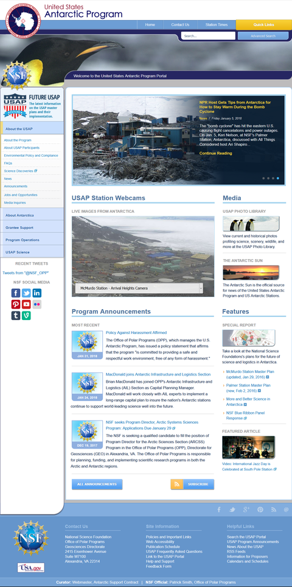
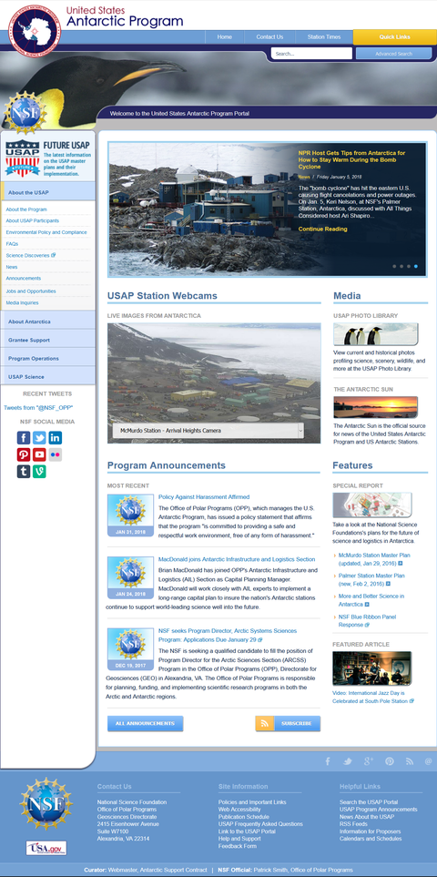

Not logged in
Talk
Contributions
Create account
Log in
Article
Talk
Read
View source
View history
Search
Website
From Wikipedia, the free encyclopedia
his article is about websites in general. For the Internet domain .website, see List of Internet top-level domains.
Not to be confused with WebCite.
The usap.gov website
A website[1] is a collection of related web pages, including multimedia content, typically identified with a common domain name, and published on at least one web server. Notable examples are wikipedia.org, google.com, and amazon.com. Today roughly 380 new websites are created every minute across the World.[2]
A website may be accessible via a public Internet Protocol (IP) network, such as the Internet, or a private local area network (LAN), by referencing a uniform resource locator (URL) that identifies the site.
Websites can have many functions and can be used in various fashions; a website can be a personal website, a corporate website for a company, a government website, an organization website, etc. Websites are typically dedicated to a particular topic or purpose, ranging from entertainment and social networking to providing news and education. All publicly accessible websites collectively constitute the World Wide Web, while private websites, such as a company's website for its employees, are typically a part of an intranet.
Web pages, which are the building blocks of websites, are documents, typically composed in plain text interspersed with formatting instructions of Hypertext Markup Language (HTML, XHTML). They may incorporate elements from other websites with suitable markup anchors. Web pages are accessed and transported with the Hypertext Transfer Protocol (HTTP), which may optionally employ encryption (HTTP Secure, HTTPS) to provide security and privacy for the user. The user's application, often a web browser, renders the page content according to its HTML markup instructions onto a display terminal.
Hyperlinking between web pages conveys to the reader the site structure and guides the navigation of the site, which often starts with a home page containing a directory of the site web content. Some websites require user registration or subscription to access content. Examples of subscription websites include many business sites, news websites, academic journal websites, gaming websites, file-sharing websites, message boards, web-based email, social networking websites, websites providing real-time stock market data, as well as sites providing various other services. End users can access websites on a range of devices, including desktop and laptop computers, tablet computers, smartphones and smart TVs.
Contents
1 History
2 Overview
3 Static website
4 Dynamic website
5 Multimedia and interactive content
6 Spelling
 
